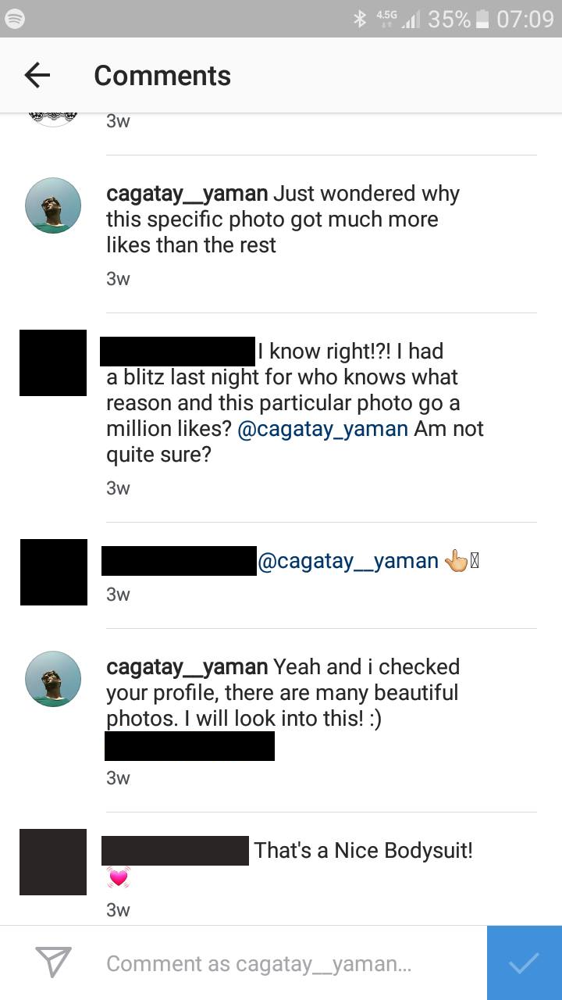
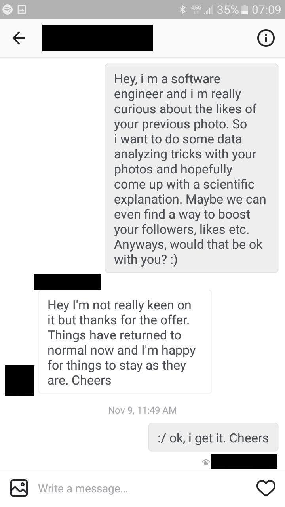

<link rel="import" href="../../bower_components/polymer/polymer.html">

<link rel="import" href="../../bower_components/gob-page/gob-page.html">
<link rel="import" href="../../bower_components/gob-content/gob-content.html">
<link rel="import" href="../../bower_components/gob-youtube/gob-youtube-video.html">
<!--
`gob-page-hello-target-audience`


@demo demo/index.html
-->

<dom-module id="gob-page-hello-target-audience">
  <template>
    <style>
      :host {
        display: block;
      }
    </style>
    <gob-page title="[[title]]">

      <p> Welcome, </p>

      <p>
        This is the first post on my first blog. Normally,
        I should tell you who I am, what I do and what this blog
        is about. But instead, I will just show you.
      </p>

      <p>
        A couple of weeks ago, I've come across a photo of a beautiful,
        sexy lady on Instagram. Unfortunately I can't share the photo and
        I'll explain that later, but I tell you, she was wearing this
        transparent full body lingerie and her pose, it was...
      </p>
      <p>
        Now I checked her photo again, I forgot about overthekneesocks
        and tattoos on her legs.
      </p>

      <gob-content>
        
      </gob-content>

      <p>
        Apparently, it's called a bodysuit by the way. #themoreyouknow
      </p>

      <p>
        I'm a curious guy, so I had to find an explanation. Preferably, a
        scientific one. My plan was to, basically, fire up a small software
        which downloads all of her instagrams then applies algorithms, magic, etc.
        I would probably need data from similar accounts too but, unfortunately,
        it didn't come to that.
      </p>

      <gob-content>
        
      </gob-content>

      <p>
        Yeah, I don't know why but she kindly refused my proposal. Honestly
        speaking, I didn't really need her permission, you know,
        programmingwise. Her account was public, so i could do whatever
        Instagram let me to do without her even noticing. But, contrary
        to the popular belief among women, I am a gentleman. I respect
        people's privacy even if it's not private. That's why I asked her
        in the first place. Whatever, I got refused and it's fine. It will
        haunt me for the rest of my life, but fine. I will wonder what made
        the fucking difference, but fine.
      </p>

      <p>Nonetheless, I tried... respectfully.</p>

      <p>
        I know I didn't say a lot about me, hoping that this post should
        give you an idea. And about the blog, I'll write mostly about Data
        Science, excluding the boring parts. Instead of telling you how,
        I'll simply focus on the knowledge extracted from
        data... scientifically.
      </p>
      <p>
        Anyways, I somehow reached you and now it's your turn to decide if
        you're my target audience or not. While you do that, if you don't mind,
        I would like to enjoy my boat ride to European side.
      </p>
      <p>
        With this song.
      </p>

      <gob-youtube-video id="z1GwbvxJ4aM"></gob-youtube-video>

      <p>I'm Çağatay, </br>
      from Istanbul, Turkey.
      </p>

      <p>
        See you in another post,
      </p>

      <p>
        If not, then share this and help me reach out my target audience, please.
      </p>

      <p>
        The name, it goes like Cha-thai.
      </p>

    </gob-page>
  </template>

  <script>
    Polymer({

      is: 'gob-page-hello-target-audience'

    });
  </script>
</dom-module>
